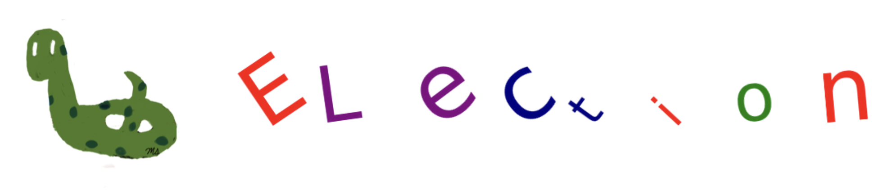

Project: Election Methods#
 Different election methods are used for various purposes, including sports awards, TV shows, and the Academy Awards.
Different methods might yield different winners.
Each election method has its own criteria and approach for determining the winner, which can lead to varying results depending on the distribution of votes and voter preferences
In this project, four different election methods will be covered.
For more details on these methods, you can refer to the first chapter of:
Excursions in Modern Mathematics, 10th edition
Published by Pearson (June 29, 2021) 2022
Peter Tannenbaum California State University, Fresno
Ballots#
In an election with 4 candidates (A, B, C, D), voters used preference ballots to rank their first, second, third, and fourth choices.
There are 5 distinct preference schedules.
These schedules are represented as a dictionary.
The values in the dictionary indicate the number of ballots with each preference order.
For example, 4 ballots ranked ‘B’ as the first choice, ‘D’ as the second, ‘C’ as the third, and ‘A’ as the fourth.
result = { 'Ballot-1': (('A', 'B', 'C', 'D'), 14),
'Ballot-2': (('C', 'B', 'D', 'A'), 10),
'Ballot-3': (('D', 'C', 'B', 'A'), 8),
'Ballot-4': (('B', 'D', 'C', 'A'), 4),
'Ballot-5': (('C', 'D', 'B', 'A'), 1) }
Cadidates#
Generate a list of the candidates in alphabetical order.
candidates = list(result['Ballot-2'][0])
candidates.sort()
candidates
['A', 'B', 'C', 'D']
The Plurality Method#
The candidate who receives the most first-place votes wins.
First place votes#
Determine the number of first-place votes each candidate receives.
first_values = {}
for value in result.values():
first_values[value[0][0]] = first_values.get(value[0][0], 0) + value[1]
first_values
{'A': 14, 'C': 11, 'D': 8, 'B': 4}
Winner#
Identify the candidate with the most first-place votes.
winner, max_value = '', 0
for i,j in first_values.items():
if j > max_value:
winner = i
max_value = j
print(f'Winner: {winner} Max Value: {max_value}')
Winner: A Max Value: 14
The Borda Count Method#
In this method, each position is assigned a specific value.
By default, the last position is worth 1 point, the second to last is worth 2 points, and so on.
For example, if there are 4 candidates, the ballot (‘B’, ‘D’, ‘C’, ‘A’) assigns 4 points to ‘B’, 3 points to ‘D’, 2 points to ‘C’, and 1 point to ‘A’.
The candidate with the highest total points from all ballots wins.
Total Points#
Calculate the total points received by each candidate.
Use the default position values.
pos_values = list(range(len(value[0]),0,-1))
pos_values
[4, 3, 2, 1]
points = {}
for value in result.values():
for i in range(len(value[0])):
points[value[0][i]] = points.get(value[0][i],0) + value[1]*pos_values[i]
points
{'A': 79, 'B': 106, 'C': 104, 'D': 81}
Winner#
Identify the candidate with the most points.
winner, max_value = '', 0
for i,j in points.items():
if j > max_value:
winner = i
max_value = j
print(f'Winner: {winner} Max Value: {max_value}')
Winner: B Max Value: 106
The Plurality with Elimination Method#
The candidate who receives the majority of first-place votes wins.
If no candidate receives a majority, the candidate with the fewest first-place votes is eliminated from the ballots.
First-place votes are counted again.
The candidate who receives the majority of first-place votes wins.
If no candidate receives a majority, the process of eliminating the candidate with the fewest first-place votes and recounting continues.
Repeat this process until a candidate receives a majority of first-place votes.
Majority#
Calculate the number of votes needed for a majority.
# number of voters
num_voters = sum([ value[1] for value in result.values()])
num_voters
37
majority = num_voters//2+1
majority
19
Round-1#
The candidate who receives the majority of first-place votes wins.
# first-place votes counted
first_values = {}
for value in result.values():
first_values[value[0][0]] = first_values.get(value[0][0], 0) + value[1]
first_values
{'A': 14, 'C': 11, 'D': 8, 'B': 4}
# chack majority
winner = 'NA'
for i,j in first_values.items():
if j > majority:
winner = i
print(f'Winner: {winner}')
Winner: NA
Round-2#
Since no candidate receives a majority, the candidate with the fewest first-place votes is eliminated from the ballots.
# determine the candidate with the fewest first-place vote
if winner == 'NA':
last, min_value = '', num_voters
for i,j in first_values.items():
if j < min_value:
last = i
min_value = j
print(f'Last: {last} Min Value: {min_value}')
Last: B Min Value: 4
# eliminate the candidate with the fewest first-place votes
result2 = result.copy()
for i, j in result2.items():
new_ballot = list(j[0])
new_ballot.remove(last)
result2[i] = (tuple(new_ballot), j[1])
result2
{'Ballot-1': (('A', 'C', 'D'), 14),
'Ballot-2': (('C', 'D', 'A'), 10),
'Ballot-3': (('D', 'C', 'A'), 8),
'Ballot-4': (('D', 'C', 'A'), 4),
'Ballot-5': (('C', 'D', 'A'), 1)}
# first-place votes are counted again.
first_values2 = {}
for value in result2.values():
first_values2[value[0][0]] = first_values2.get(value[0][0], 0) + value[1]
first_values2
{'A': 14, 'C': 11, 'D': 12}
# check majority
winner = 'NA'
for i,j in first_values2.items():
if j > majority:
winner = i
print(f'Winner: {winner}')
Winner: NA
Round-3#
Since no candidate receives a majority, the candidate with the fewest first-place votes is eliminated from the ballots.
# determine the candidate with the fewest first-place vote
if winner == 'NA':
last, min_value = '', num_voters
for i,j in first_values2.items():
if j < min_value:
last = i
min_value = j
print(f'Last: {last} Min Value: {min_value}')
Last: C Min Value: 11
# eliminate the candidate with the fewest first-place votes
result3 = result2.copy()
for i, j in result3.items():
new_ballot = list(j[0])
new_ballot.remove(last)
result3[i] = (tuple(new_ballot), j[1])
result3
{'Ballot-1': (('A', 'D'), 14),
'Ballot-2': (('D', 'A'), 10),
'Ballot-3': (('D', 'A'), 8),
'Ballot-4': (('D', 'A'), 4),
'Ballot-5': (('D', 'A'), 1)}
# first-place votes are counted again.
first_values3 = {}
for value in result3.values():
first_values3[value[0][0]] = first_values3.get(value[0][0], 0) + value[1]
first_values3
{'A': 14, 'D': 23}
# check majority
winner = 'NA'
for i,j in first_values3.items():
if j > majority:
winner = i
print(f'Winner: {winner}')
Winner: D
The Pairwise Comparision Method#
Each pair of candidates is compared pairwise.
For each ballot, comparisons are made between each pair of candidates.
For the ballot (‘C’, ‘D’, ‘B’, ‘A’), candidate ‘B’ gets the vote when compared to candidate ‘A’.
For the ballot (‘C’, ‘D’, ‘B’, ‘A’), candidate ‘D’ gets the vote when compared to candidate ‘B’.
The winner of each pairwise comparison receives 1 point, and the loser receives 0 points.
In the event of a tie, each candidate receives half a point.
The candidate with the most points from all pairwise comparisons wins.
Combinations#
The combinations() function from the itertools module returns all possible 2-length subsequences (pairs) of elements from the candidates list.
from itertools import combinations
pairs = list(combinations(candidates, 2))
pairs
[('A', 'B'), ('A', 'C'), ('A', 'D'), ('B', 'C'), ('B', 'D'), ('C', 'D')]
Pairwise Comparisons#
comparison = {}
for c1, c2 in pairs:
vote1, vote2 = 0, 0
for values in result.values():
if values[0].index(c1) < values[0].index(c2):
vote1 += values[1]
else :
vote2 += values[1]
print(f'Pair: {(c1, c2)} Votes: {(vote1, vote2)}')
if vote1 > vote2:
comparison[c1] = comparison.get(c1, 0) + 1
elif vote1 < vote2:
comparison[c2] = comparison.get(c2, 0) + 1
else:
comparison[c1] = comparison.get(c1, 0) + 1/2
comparison[c2] = comparison.get(c2, 0) + 1/2
comparison
Pair: ('A', 'B') Votes: (14, 23)
Pair: ('A', 'C') Votes: (14, 23)
Pair: ('A', 'D') Votes: (14, 23)
Pair: ('B', 'C') Votes: (18, 19)
Pair: ('B', 'D') Votes: (28, 9)
Pair: ('C', 'D') Votes: (25, 12)
{'B': 2, 'C': 3, 'D': 1}
Winner#
Select the candidate with the highest points.
winner, max_value = '', 0
for i,j in comparison.items():
if j > max_value:
winner = i
max_value = j
print(f'Winner: {winner} Max Value: {max_value}')
Winner: C Max Value: 3
Future Work#
The code in this project contains many repetitions to explain the steps in detail.
Rewrite the code using functions to avoid these repetitions.